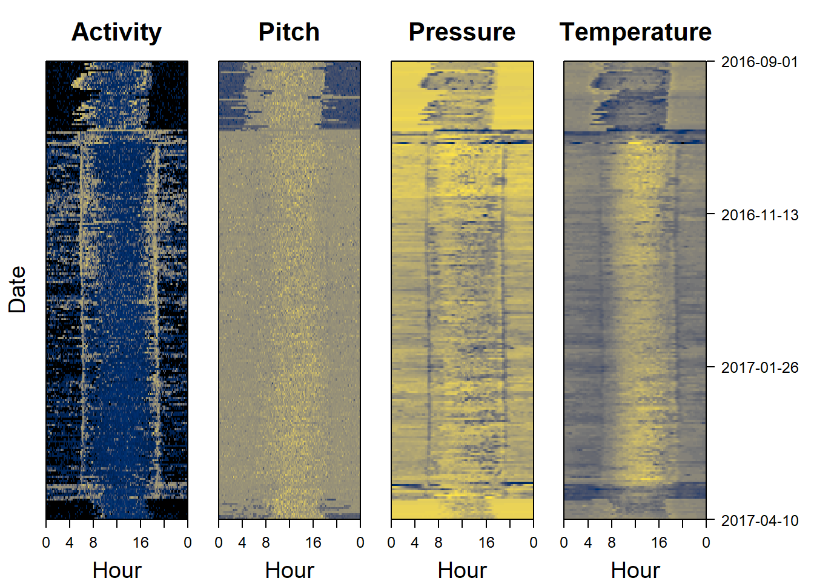
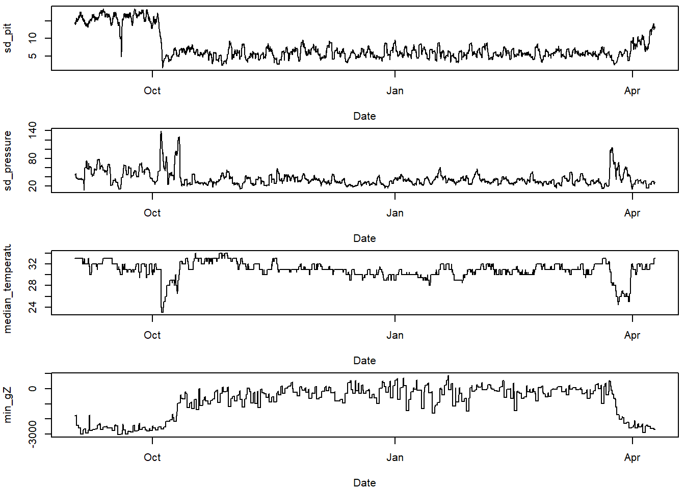
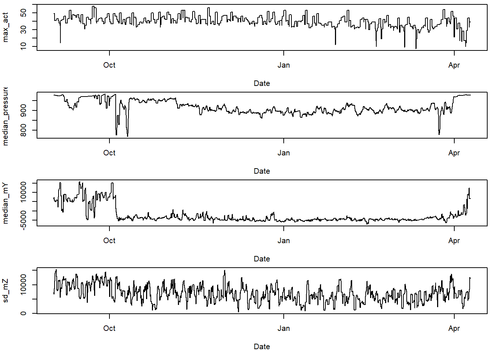
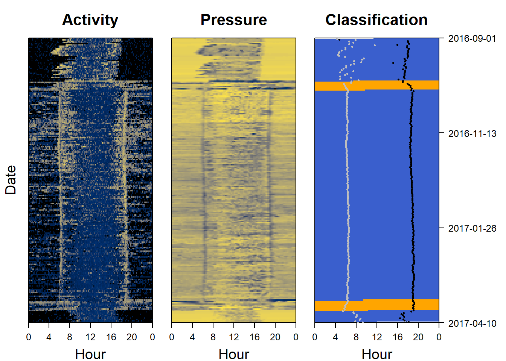

11 Example 3: flap-glide

Figure 11.1: Photograph by Pau Artigas, (c) creative commons
11.1 Classifying migratory flight Alpine swifts: The dataset
Alpine swift (Apus melba) have been tracked on the their migrations from Switzerland to sub-Saharan Africa using SOI-GDL3pam loggers.
- Pressure is recorded every 15 minutes
- Light is recorded every 2 minutes
- Activity is recorded every 5 minutes
- Pitch is recorded every 5 minutes
- Temperature is recorded every 15 minutes
- Tri-axial acceleration is recorded every 4 hours
- Tri-axial magnetic field is recorded every 4 hours
11.2 Visualise data
Sensor images are a good place to start when analysing data, as they can give a rapid overview of the dataset. Darker colors represent lower values, and lighter colors (in this case yellow) represent higher values. Sensor images for activity (also known as an actogram), pitch, pressure and temperature are a good place to start. The following code plots this for us:
par(mfrow= c(1,4), # number of panels
oma=c(0,2,0,6), # outer margin around all panels
mar = c(4,1,4,1)) # inner margin around individual fivure
plot_sensorimage(PAM_data$acceleration$date, ploty=FALSE,
PAM_data$acceleration$act, main = "Activity",
col=c("black",viridis::cividis(90)), cex=1.2, cex.main = 2)
plot_sensorimage(PAM_data$acceleration$date, plotx=TRUE, ploty=FALSE, labely=FALSE,
PAM_data$acceleration$pit, main="Pitch",
col=c("black",viridis::cividis(90)), cex=1.2, cex.main = 2)
plot_sensorimage(PAM_data$pressure$date, plotx=TRUE, ploty=FALSE, labely=FALSE,
PAM_data$pressure$obs, main="Pressure",
col=c("black",viridis::cividis(90)), cex=1.2, cex.main = 2)
plot_sensorimage(PAM_data$temperature$date, labely=FALSE,
PAM_data$temperature$obs, main="Temperature",
col=c("black",viridis::cividis(90)), cex=1.2, cex.main = 2)
11.3 What should we look for?
Some pattern start to stick out.
- Migration appears very short
- The birds are active all year round
- Pressure is lower during migration indicating higher altitude flights, particularly during night
- Temperature is lower during migration also indicating higher altitudes
11.3.1 Plot the classifiers
This helps think about which classifiers show differences for the behaviours we are trying to classify.
# choose variables of interest
varint = c("sd_pit",
"sd_pressure",
"median_temperature",
"min_gZ",
"max_act",
"median_pressure",
"median_mY",
"sd_mZ")
#plot these variables of interest
par(mfrow=c(4,1), mar=c(4,4,0.5,0.5))
for (i in 1:length(varint)){
plot(TOclassify$date, TOclassify[,varint[i]],
type="l", xlab="Date", ylab = varint[i])
}
11.5 Plot the classification as a sensor image
Another way of looking at a classification is to use a sensor image of the results and to plot it side by side with the raw data to see if the same patterns are being picked out. We can also add (for instance sunset and sunrise events)
par(mfrow= c(1,3), # number of panels
oma=c(0,2,0,6), # outer margin around all panels
mar = c(4,1,4,1)) # inner margin around individual fivure
col=c("royalblue3", "orange")
plot_sensorimage(PAM_data$acceleration$date, ploty=FALSE,
PAM_data$acceleration$act, main = "Activity",
col=c("black",viridis::cividis(90)), cex=1.2, cex.main = 2)
plot_sensorimage(PAM_data$pressure$date, plotx=TRUE, ploty=FALSE, labely=FALSE,
PAM_data$pressure$obs, main="Pressure",
col=c("black",viridis::cividis(90)), cex=1.2, cex.main = 2)
plot_sensorimage(TOclassify$date, labely=FALSE,
mig_classification,
main="Classification",
col=col,
cex=1.2, cex.main = 2)
# estimate sunrises and sunsets
twilights <- twilightCalc(PAM_data$light$date, PAM_data$light$obs,
LightThreshold = 2, ask = FALSE)
# Add sunrises and sunsets
plot_sensorimage_twilight(twilights$tFirst,
offset=0,
col= ifelse(twilights$type == 1,
"grey","black"),
pch=16, cex=0.5)